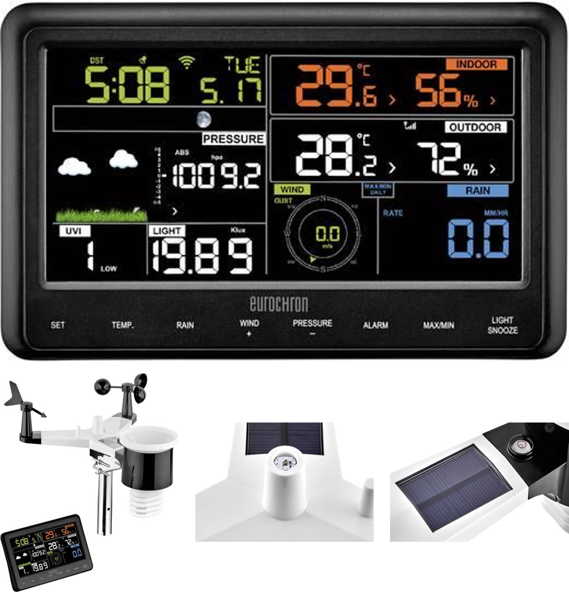

Waar vind je Physical Computing?
Contents
Waar vind je Physical Computing?#
Inleiding#
Bij physical computing draait het om computersystemen die gebruik maken van sensoren (om iets waar te nemen) en actuatoren (om iets in gang te zetten). Een relatief simpel voorbeeld is de thermostaat die je in de meeste huizen vindt. De thermostaat meet de temperatuur met één of meerdere temperatuursensoren in huis. Als de temperatuur te laag is, zet het systeem de verwarming aan. De verwarming is een actuator.
Ook een sporthorloge hoort bij physical computing. Een veel complexer systeem is een zelfrijdende auto. Of een robotchirurg. En zo zijn er duizenden toepassingen. In de volgende paragrafen geven we nog enkele voorbeelden van physical computing. Bepaal samen met je docent welke voorbeelden je gaat bekijken.
In de rest van de module zul je natuurlijk ook allerlei toepassingen vinden van physical computing.
Opdracht 1 (verken een toepassing van physical computing en bereid een presentatie voor)
Je merkt al, het aantal toepassingen van physical computing is onzettend groot. Voor deze opdracht werk je in twee- of drietallen. Kies samen een toepassing binnen physical computing. Bedenk eerst binnen welk domein je gaat zoeken:
Zorg
Transport / vervoer / mobiliteit
Kunst
Veiligheid
Comfort in en om het huis
Sport
…
Kies samen één toepassing en verken deze toepassing. Zoek zelf naar informatie. Bereid vervolgens een presentatie voor waarin jullie een review geven van de toepassing. Ga in ieder geval in op de volgende vragen:
Wat kun je er mee?
Hoe werkt het?
Welke sensoren en actuatoren worden gebruikt?
Wat zijn beperkingen van het systeem? Wanneer werkt het niet of niet goed?
Wat kost het?
Robotchirurg#
Bekijk de twee video’s in het volgende artikel over robotchirurgie.
Opereren met robots gaat grote vlucht nemen
Cobots zijn robots die samenwerking met de mens, mens en machine versterken elkaar. Lees het volgende artikel over cobots.
Wat als wij gaan samenwerken met robots?
Vraag 1 - Cobots en Robotchirurg
Welke sensoren en actuatoren heeft de robot die in het filmpje over robotchirurgie wordt gebruikt?
Wat zijn de uitdagingen in de verdere ontwikkeling van deze chirurgie-robots?
Vergelijk mensen en computers/robots met elkaar als het gaat om het chirurgie. Waar zijn mensen op dit moment beter in en waar zijn robots/computers beter in?
In de figuur in het artikel over cobots zie je allerlei voorbeelden van toekomstige beroepen waarbij de mens zich laat versterken door de computer. Op welke van de genoemde toekomstige beroepen lijkt de chirurg uit het eerdere filmpje het meest vind je? Leg in 1 of 2 zinnen uit waarom.
Stofzuigerrobot#
Een stofzuigerrobot maakt je kamer schoon terwijl je zelf op school zit of aan het werk bent. Er zijn diverse stofzuigerrobots verkrijgbaar. In het filmpje hieronder zie je een korte review van de iRobot Roomba 980. Deze stofzuigerrobot is in staat te bepalen of er een object in de weg staat. Als de stofzuiger naar beneden dreigt te vallen, bijvoorbeeld van de trap, draait hij zich om. Hij laadt zichzelf op bij het basisstation.
Vraag 2 - Stofzuigerrobot
Beschrijf de sensoren van deze stofzuigerrobot (de iRobot Roomba 980)
Actuatoren zijn onderdelen die een robot in staat stelt de wereld om zich heen te beïnvloeden of de robot te laten bewegen. Welke actuatoren heeft deze stofzuigerrobot?
Weerstation#
Hieronder zie je de display en overige onderdelen van een uitgebreid weerstation.
{kind=link}

Fig. 1 Weerstation#
Vraag 3 - Weerstation
Bekijk de afbeeldingen van het weerstation zorgvuldig en geef aan wat voor sensoren dit weerstation gebruikt. Geef ook aan waarvoor het weerstation deze sensoren gebruikt.
Exoskelet#
Studenten van de TU-Delft werken aan de ontwikkeling van een exoskelet, de March II. Een exoskelet maakt het mogelijk voor mensen met een dwarslaesie om te kunnen lopen.
Bekijk het filmpje, de website van project MARCH en lees eventueel het artikel.
Dwarslaesiepatiënt zet eerste stappen met exoskelet van studenten
Vraag 4 - Exo-skelet
Beschrijf welke ontwikkeling(en) het tegenwoordig mogelijk maken om een dergelijk exoskelet te kunnen bouwen.